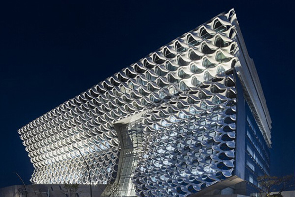
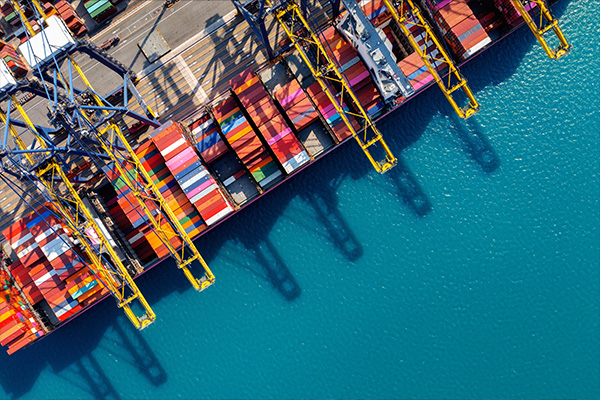
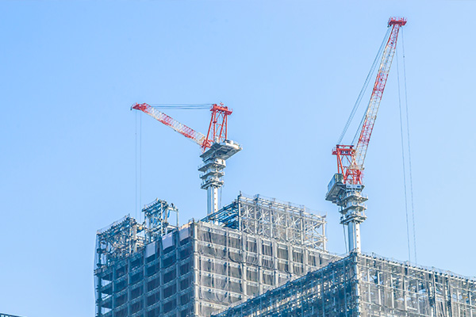

홈
>
회사소개
>
코오롱글로벌
코오롱글로벌

지속 가능한 미래를 창조하는 Green Pioneer!
차별화된 기술력으로 미래를 선도하는 기업 코오롱글로벌,여러분과 함께합니다.
2011년 코오롱건설이 코오롱아이넷과 코오롱B&S를 합병하며 출범한 코오롱글로벌은 차별화된 기술력과 고객 만족을 최고의 가치로 여기며, 늘 새로운 모습으로 고객 여러분과 함께하는 기업입니다.
유통, 무역, 건설부문의 다양한 사업 포트폴리오를 구축하고 사업 부문간 시너지 효과와 함께 새로운 형태의 고부가가치 사업을 추진하고 있습니다.

- 회사명코오롱 글로벌 주식회사
- 대표이사김정일
- 설립일1960년 12월 28일
- 본사주소인천 연수구 송도과학로32 송도 IT센터
-
임작원수
0
명 -
매출액
0
억원 -
영업이익
0
억원 -
당기순이익
0
억원
-

- 유통
- 유통 사업부문은 1987년 국내 최초로 BMW를 수입/판매하기 시작한 이래 MINI, Motorrad, Rolls-Royce 등 다양한 브랜드들로 확대해가고 있으며, 코오롱스포렉스 스포츠센터의 운영 및 컨설팅 등의 사업에도 힘쓰고 있습니다.
-
- 상사
- 전문 인력과 오랜 기간 동안 축적된 노하우로 국내외 화학산업 및 철강 군수등 주요 세계 물류 시장에서 코오롱 글로벌은 수출입을 이끌어 가고 있습니다.
-

- 건설
- 토목, 환경, 건축, 주택, 플랜트의 종합건설 사업은 새로운 사업과 시장을 발굴하고, 전문성과 노하우를 강화하여 글로벌 마케터로서의 입지를 넓혀가고 있습니다.